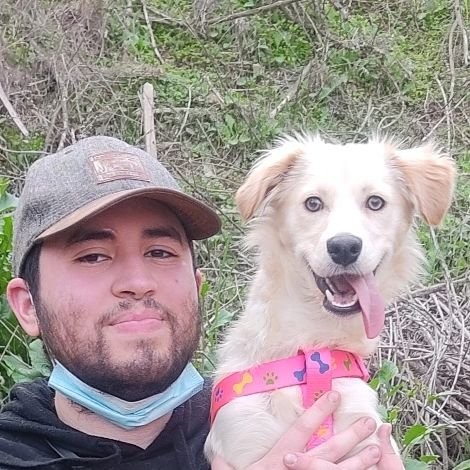

¡Bienvenidos a mi sitio web! Mi nombre es Francisco y soy el único creador detrás de este proyecto.
Empecé este proyecto por una perrita muy especial llamada Cloe. Cloe fue una compañera y fuente de inspiración en mi vida. Ella estuvo conmigo en las buenas y en las malas, siempre a mi lado. Lamentablemente, Cloe falleció después de pasar un poco más de un año conmigo debido a un cáncer intratable. Durante ese año que compartimos, me enseñó mucho sobre el amor, la lealtad y la importancia de crear algo significativo.
En honor a Cloe y todo lo que ella me enseñó, decidí iniciar este proyecto. Quería canalizar mi amor y pasión por ella en algo que pudiera afectar la vida de otros animales. Y así nació este proyecto.
Como único creador de este proyecto, me enorgullezco de todos sus aspectos, desde el diseño hasta el contenido. Espero que mi sitio web traiga alegría e inspiración a tu fundación, tal como Cloe lo hizo para mí.
Gracias por visitar,
Fran
